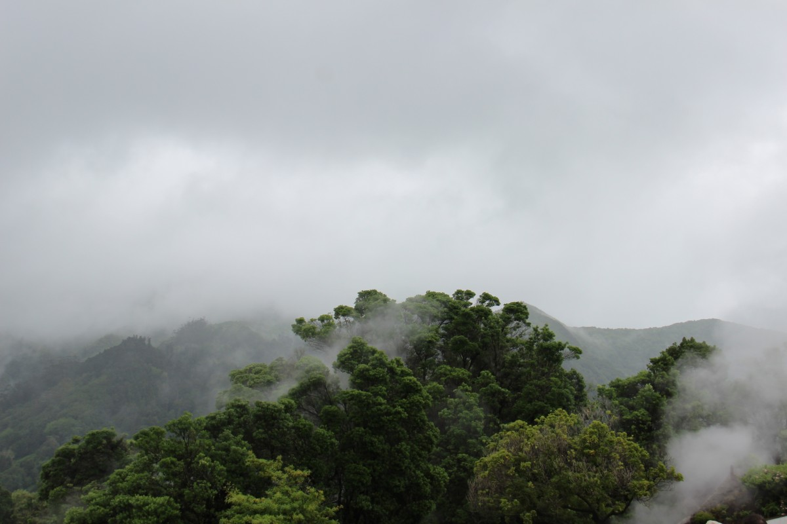

10/11/2020 , Dans la page wwf
WWF est l'une des plus grandes organisations de conservation au monde.
NOTRE MISSION EST D'ARRÊTER LA DÉGRADATION DE L'ENVIRONNEMENT DANS LE MONDE ET DE CONSTRUIRE UN AVENIR OU LES ÊTRES HUMAINS POURRONT VIVRE EN HARMONIE AVEC LA NATURE. Pour y parvenir, WWF cherche à mettre en œuvre des solutions concrètes et durables aux problèmes environnementaux urgents et émergents à travers le monde en partenariat avec les communautés locales, les entreprises, les gouvernements, les organismes internationaux et les ONG.
À Madagascar, notre objectif est de bien gérer le capital naturel pour le bénéfice de son peuple et de la nature.WWF Madagascar travaille dans un certain nombre de domaines pour assurer un impact positif global sur la protection de la biodiversité de l’île et l’amélioration du bien-être des Malagasy.
RAKOTOVAHOAKA Mamihaja Tsihory
Copyright Tsihory 2020